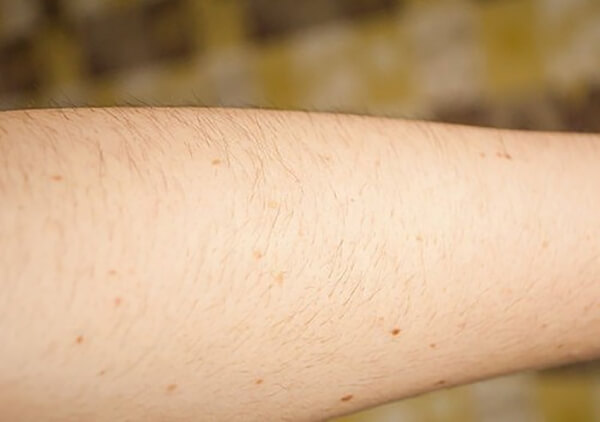

Umiha - Khi vi-ô-lông không còn là chướng ngại
10 / 06 / 2018
Tôi may mắn được sinh ra với khuôn mặt ưa nhìn và một vóc dáng tạm gọi là cân đối. Ngay từ những tháng ngày còn đi học, trong khi lũ con gái trong lớp khốn đốn với mụn trứng cá, với béo phì, với tàn nhang, tôi nổi bật lên là một “hotgirl” trường làng với biết bao vệ tinh theo đuổi.
Những năm tháng kiêu hãnh ấy có lẽ đã kéo dài mãi nếu không có ngày hôm đó, khi tôi mặc chiếc chân váy tham dự lễ bế giảng của trường. Dưới ánh nắng vàng hoe mùa tan trường, từng sợi lông dài, đen nhánh hiện lên trên bắp chân trắng nõn của tôi. Rõ ràng và hằn sâu giống như những vệt chì màu đen loang lổ trên bức tranh hoàn mỹ mà tôi vẫn vẽ về mình trước đó.
“Violong đã từng là nỗi ám ảnh của tôi”
Việc để tụi bạn phát hiện ra điều xấu xí đó, dĩ nhiên, đã kết thúc chuỗi ngày huy hoàng của tôi ở trường cấp 2, và sau này là cả cấp 3 nữa. Tôi bắt đầu bị gán cho biệt danh là “người tối cổ”, là “vượn chưa tiến hóa”. Từ một cô nàng kiêu kỳ, tôi trở nên tự ti, sợ những chiếc áo ngắn tay, những chiếc váy ngắn trên gối. Tôi căm ghét từng sợi lông trên cơ thể mình. Từng có giai đoạn tôi tủi thân trốn trong phòng, vừa khóc vừa dùng nhíp nhổ đi những cọng lông đáng ghét ấy, nhưng đều phải dừng giữa chừng vì quá đau.
Đọc đến đây chắc có bạn sẽ hỏi, tại sao tôi không tìm cách triệt lông đi? Tôi đã. Cách đầu tiên mà tôi nghĩ đến là dùng dao cạo. Tôi lấy trộm chiếc dao cạo và kem cạo râu của bố, lén lút ở lại lâu hơn trong phòng tắm để “xử lý” đám lông của mình. Tôi những tưởng ác mộng đời mình đã kết thúc sau khi cạo, nhưng không, sau một vài lần làm như vậy, tôi phát hiện đám lông không những mọc lại nhiều mà còn đen và cứng hơn. Tôi càng điên cuồng cạo, lông càng mọc dày thêm, và đến một ngày kia, những lỗ chân lông trên da tôi có vẻ không thể chịu đựng thêm nữa, chúng bắt đầu biểu tình. Trên da tôi lúc đó, ngoài đám lông đáng ghét, những mụn nhỏ bắt đầu xuất hiện quanh lỗ chân lông giống như mụn trứng cá và ngứa kinh khủng. Không còn cách nào khác, tôi đành từ bỏ sự nghiệp cạo lông chân của mình trong tuyệt vọng.
“Rất nhiều phương pháp triệt lông đều gần như vô tác dụng với tôi”
Lên cấp 3, tôi được đứa bạn chỉ cho cách wax lông bằng keo đường và mật ong. Nghĩ cũng toàn nguyên liệu tự nhiên, lại thấy trên Youtube có người làm thử rồi, tôi yên tâm và bắt chước làm theo. Nhưng có vẻ mọi chuyện không đơn giản như tôi tưởng. Thứ keo wax sền sệt không dính nổi lên da tôi những ngày hè oi bức, và nếu lỡ có dính được, thì mỗi lần lột ra là một sự đau đớn không thể nào quên. Đỉnh điểm là một lần, quyết tâm không để nỗi đau kéo dài, tôi nghiến răng giật thật mạnh miếng dán trên chân. Những sợi lông cứng đầu quả nhiên chịu thua, nằm la liệt trên miếng dán, nhưng là cùng với... máu của tôi. Việc giật miếng wax là quá sức chịu đựng với làn da của tôi, làm những mạch máu dưới da bị vỡ. Do để bắp chân rớm máu tiếp xúc với hỗn hợp mật ong mà lần đó suýt nữa tôi đã phải đi viện vì nhiễm trùng.
Xem thêm: Sản phẩm triệt lông nguồn gốc thiên nhiên tốt nhất hiện nay
Tôi vẫn nung nấu ý định triệt lông của mình sau đó. Sinh viên đại học đi làm thêm cũng tiết kiệm được chút đỉnh, tôi đầu tư một số tiền không hề nhỏ tới một spa khá nổi tiếng với chúng tôi hồi đó. Việc triệt lông diễn ra hiệu quả trong mấy ngày đầu. Lông của tôi tuy nhạt màu hơn nhưng vẫn mọc lại, và tôi đã phải đến spa thêm lần thứ 2, thứ 3. Đến lần thứ 4 thì tôi bỏ cuộc, vì đã cạn số tiền tiết kiệm trong mấy năm đại học.
Sau lần đó, tôi quyết định chung sống hòa bình với lông. Tôi vẫn sống, vẫn làm việc và vẫn có những mối quan hệ, mặc dù trong thâm tâm không lúc nào tôi ngưng tự ti về vẻ ngoài “người tối cổ” của mình. Có những lần bạn trai tôi hỏi sao trời nóng như này mà em vẫn mặc áo dài tay. Hay có những lần cả hai có những đụng chạm thân mật, tôi vô tình gạt tay anh ra khi anh muốn chạm vào bắp chân của tôi – nơi không chỉ có những cọng lông đáng ghét mà còn đầy những dấu vết của những lần triệt lông không thành.
“Tôi đã gặp ánh sáng cuối đường hầm với mỡ trăn U Minh Hạ”
Nhưng có lẽ sau chừng ấy năm, ông trời rốt cuộc cũng đã nghe được tiếng lòng của tôi. Một lần về quê thăm họ hàng, tôi được một người cô tặng lọ mỡ trăn U Minh Hạ kèm một lọ tẩy lông nhập ngoại, với công dụng trị lông vĩnh viễn. Do đã quá mệt mỏi với những cách tẩy lông rẻ có, đắt có, nhận lọ mỡ trăn mà tôi bán tín bán nghi. Tuy vậy tôi vẫn nhận, có lẽ do nể mặt cô tôi, và chắc do trong lòng dù sao cũng le lói tia hi vọng. Sau khi dùng thử theo hướng dẫn lần đầu tiên không đau, không ngứa, tôi dù rất vui nhưng vẫn còn nghi ngại. Chỉ khi dùng được gần hết tuýp kem và nửa lọ mỡ trăn, không thấy có vấn đề gì, lông tay lông chân gần như biến mất hẳn, lúc ấy tôi mới gào lên trong sung sướng. Những ngày tháng ác mộng thật sự đã chấm dứt rồi!
“Vị "cứu tinh" của tôi”
“Tự tin khoe cá tính”
Cho tới bây giờ khi nhìn lại vẻ ngoài của mình trong gương, tôi vẫn cảm thấy mình thật may mắn. May mắn vì ngày ấy đã nhận được món quà vô giá của cô tôi, may mắn vì đã tin tưởng mà mở ra dùng thử. Những vết mụn do viêm lỗ chân lông vì triệt lông không đúng cách ngày trước, nhờ lọ mỡ trăn U Minh Hạ chiết xuất 100% nguyên chất từ những con trăn khỏe mạnh nhất, cũng đã mờ dần rồi mất hẳn. Cô gái “người tối cổ” hay buồn bã tự ti giờ đã trở nên tự tin và cười nhiều hơn trước. Bạn trai – giờ là chồng tôi – khen tôi rạng rỡ và xinh đẹp hơn hẳn. Công việc cũng nhờ đó mà suôn sẻ hơn. Cảm giác như tôi vừa được sống lại một lần nữa vậy – cảm ơn mỡ trăn U Minh Hạ!

Lời khuyên của chuyên gia và hướng dẫn sử dụng mỡ trăn U Minh Hạ
Ngày nay, triệt lông không còn là “khái niệm” làm đẹp mới mẻ, bởi vậy, có rất nhiều phương pháp từ đơn giản đến phức tạp được cung cấp. Tôi có thể đơn cử một số phương pháp phổ biến hiện nay như triệt lông bằng laze hoặc waxing. Phương pháp triệt lông bằng laze hay các phương pháp công nghệ cao khác tuy có kết quả nhanh, tức thì nhưng vô cùng tốn kém và không phải cơ sở nào cũng uy tín để có thể thực hiện phương pháp này. Bởi vậy, chúng tôi đã ghi nhận rất nhiều trường hợp bệnh nhân gặp tai biến hoặc gánh chịu di chứng từ phương pháp công nghệ cao Còn đối với waxing, bạn có thể thực hiện phương pháp này tại nhà nhưng chúng sẽ sẽ bề mặt ra bị tổn thương nghiêm trọng, gây đau đớn thậm chí viêm nhiễm nếu dụng cụ waxing không hợp vệ sinh.
Chính bởi vậy, các sản phẩm có nguồn gốc tự nhiên, vừa an toàn, vừa hiệu quả, một trong số đó là mỡ trăn tự nhiên.
Mỡ trăn có rất nhiều công dụng đối với sức khỏe như hỗ trợ điều trị bệnh hen suyễn, bệnh tim,,,. Tuy nhiên, vì mùi vị khá đặc trưng nên chúng ta biết nhiều hơn về mỡ trăn với chức năng làm đẹp. Cụ thể như trị mụn, trị sẹo thâm, trị rạn da, cháy da cho nắng, tẩy trang,... Tuy nhiên, chúng ta cần phải hiểu bản chất mỡ trăn không trực tiếp làm rụng lông, mà có tác dụng chính làm se khít lỗ chân lông, bảo vệ vùng da cần triệt lông và gây ức chế việc mọc lông. Chính bởi vậy, dùng mỡ trăn để triệt lông không đem lại kết quả ngay tức thì như các phương pháp khác nhưng an toàn, tiết kiệm và dễ thực hiện hơn.
Cách sử dụng vô cùng đơn giản, đầu tiên, chúng ta phải vệ sinh sạch vùng da cần triệt lông. Sau đó, sử dụng các biện pháp triệt lông phổ biến như dùng kem tẩy lông, waxing,... Không nên dùng dao cạo bởi chúng có thể gây tổn thương cho vùng da của bạn, thậm chí gây viêm lỗ chân lông. Hơn thế, việc dùng nhíp nhổ lông cũng không được khuyến khích bởi chúng có thể khiến lông mọc ngược, gây thâm vùng da có lông đó.
Tiếp theo, bạn vệ sinh lại một lần nữa vùng da đã triệt lông, sau đó thoa mỡ trăn nguyên chất U Minh Hạ đều lên vùng da đó, massage và để mỡ trăn thẩm thấu vào da khoảng 2-4 tiếng. Cuối cùng rửa sạch lại bằng nước. Mỗi ngày đều thoa mỡ trăn như vậy để ngăn chặn sự mọc lông trở lại.
Ngoài tác dụng làm đẹp, mỡ trăn U Minh Hạ còn là phương thuốc hữu ích để trị bỏng, nhuận tràng, chữa chàm,... rất hiệu quả.
{kind=link}